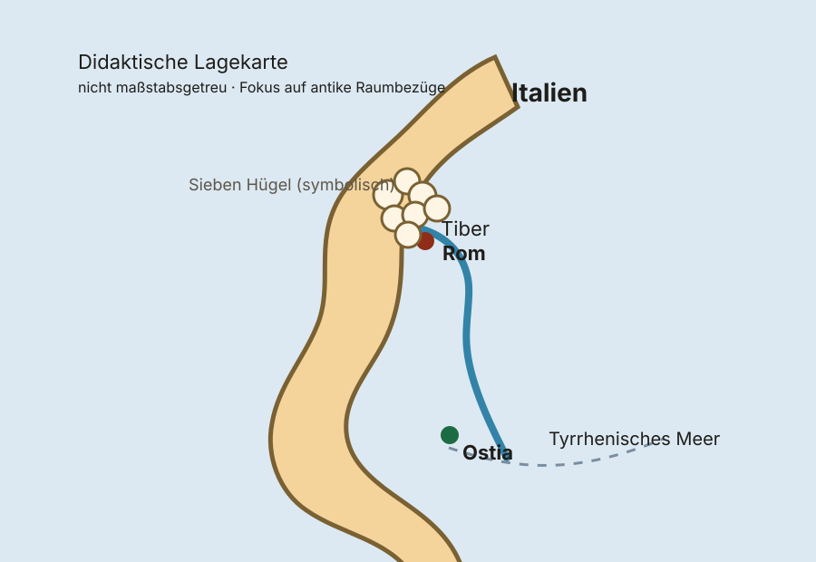
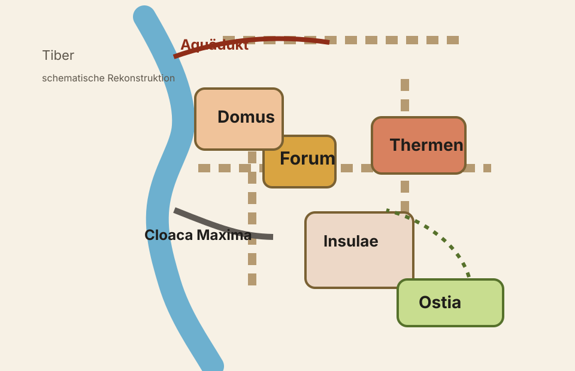
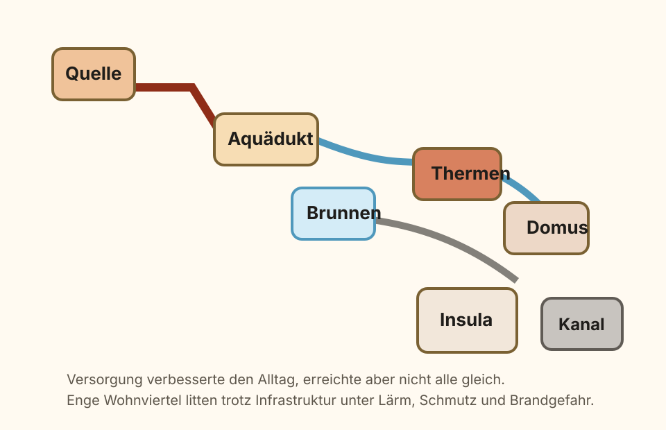

0–5 Min.
Einstieg
Impulsbild und Frage: Was braucht eine Stadt, damit viele Menschen dort leben können?
Person 1 moderiert.
Geschichte · Geografie · Gesellschaft
Eine barrierearme, druckfreundliche 45‑Minuten-Unterrichtsstunde für vier Vortragende – mit Karten, Diagrammen, Gruppenarbeit, Sicherung, Spiel und Hausaufgabe.
45 Minuten · vier Rollen
0–5 Min.
Impulsbild und Frage: Was braucht eine Stadt, damit viele Menschen dort leben können?
Person 1 moderiert.
5–12 Min.
Lage Roms, Tiber, Hügel, Ostia und Straßenanbindung klären.
Person 1 erklärt Karten und Begriffe.
12–19 Min.
Forum, Wohngebiete, Thermen, Aquädukte, Straßen und Cloaca Maxima als System betrachten.
Person 2 übernimmt.
19–31 Min.
Vier Gruppen arbeiten differenziert zu Lage, Infrastruktur, Wohnen und Bewertung.
Personen 2–4 begleiten.
31–38 Min.
Kurzquiz mit direktem Feedback: Welche städtische Lösung passt zu welchem Problem?
Person 3 leitet.
38–45 Min.
Vor- und Nachteile gewichten, Exit-Ticket ausfüllen und Transfer in die Gegenwart herstellen.
Person 4 schließt ab.
Raumorientierung

In der Kaiserzeit wuchs Rom zu einer Millionenstadt. Gerade dieses Wachstum machte Infrastruktur, Versorgung und soziale Organisation so wichtig.
Funktion und Aufbau
Forum, Basiliken und Tempel lagen zentral. Hier wurden Handel, Recht und Politik sichtbar.
Aquädukte brachten Wasser, Märkte verteilten Güter, Ostia diente als wichtiger Hafen.
Zwischen wohlhabenden Domus und engen Insulae zeigte sich soziale Ungleichheit direkt im Stadtbild.


Vertiefende Medien
Panoramaansicht der Ruinenlandschaft als Brücke zwischen antiker Stadtstruktur und heutiger Archäologie.
Ansicht eines römischen Aquädukts im Parco degli Acquedotti – gut geeignet für Infrastruktur und Technik.
Ergänzend: Straßenbild von Ostia Antica oder optional der frei zugängliche Virtual-Rome-Kurs der University of Reading.
Präsentation im Team
Kooperative Phase
Jede Gruppe notiert Funktion, Nutzen und Probleme ihres Bereichs. Danach wird ein Satz formuliert: „Für die Menschen in Rom war unser Bereich wichtig, weil …“
Schnelle Aktivierung
Sicherung
Transfer
Vergleiche Rom mit einer heutigen Stadt deiner Wahl. Notiere zwei Gemeinsamkeiten und zwei Unterschiede in den Bereichen Lage, Versorgung, Wohnen oder Verkehr. Begründe, welche Stadt für ihren Alltag besser vorbereitet wirkte.
Druckversionen
Basisniveau zu Lage, Tiber und Ostia.
Aquädukte, Straßen, Handel und Versorgung.
Domus, Insulae und Alltagsprobleme.
Vor- und Nachteile abwägen und eigene Stadt planen.
Lösungen, Moderationshinweise und Minutenplan.
Exakte Seitenlinks, Lizenzhinweise und historische Caveats.
{kind=link}
{kind=link}
.jpg){kind=link}